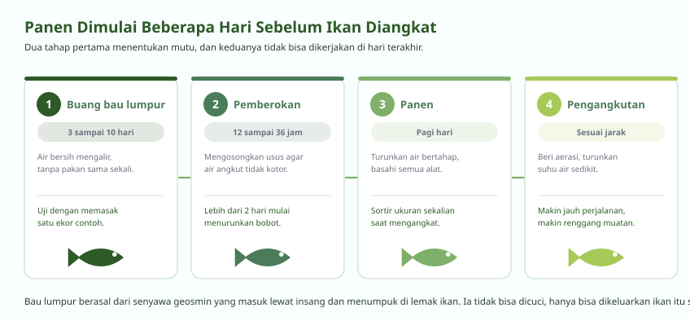

Panen Dimulai Beberapa Hari Sebelum Ikan Diangkat
Yang dikerjakan di hari terakhir menentukan harga jualnya
Banyak pembudidaya memperlakukan panen sebagai pekerjaan satu hari. Padahal dua hal yang paling menentukan mutu, yaitu pemberokan dan penghilangan bau lumpur, harus dimulai jauh sebelum ikan diangkat.
Ikan yang sama persis bisa laku dengan mutu berbeda hanya karena perbedaan penanganan di beberapa hari terakhir.

Pemberokan
Mengosongkan saluran cerna sebelum ikan diangkut
Pemberokan berarti memuasakan ikan sebelum panen. Tujuannya bukan menghemat pakan, melainkan mengosongkan saluran cernanya.
Ikan yang perutnya penuh akan terus mengeluarkan kotoran selama pengangkutan. Kotoran itu menjadi amonia di dalam air angkut yang sempit, dan amonia itulah yang membunuh ikan di perjalanan. Perut kosong juga menurunkan pemakaian oksigen.
| Keperluan | Lama pemberokan | Catatan |
|---|---|---|
| Panen dan jual di tempat | 12 sampai 24 jam | Cukup untuk mengosongkan usus |
| Pengangkutan jarak dekat | 24 jam | Air angkut tetap lebih bersih |
| Pengangkutan jarak jauh | 24 sampai 36 jam | Makin lama perjalanan, makin penting |
| Pengangkutan benih | 12 sampai 24 jam | Benih lebih rentan, jangan berlebihan |
Menghilangkan Bau Lumpur
Masalah yang paling sering menurunkan harga, dan paling salah dipahami
Bau lumpur pada ikan air tawar bukan berasal dari kotoran, dan tidak bisa dihilangkan dengan mencuci. Penyebabnya dua senyawa bernama geosmin dan MIB yang dihasilkan cyanobacteria dan actinomycetes di dalam air.
Kedua senyawa itu masuk lewat insang, lalu menumpuk di jaringan lemak ikan karena sifatnya larut dalam lemak. Penyerapannya cepat, hanya beberapa jam. Pengeluarannya jauh lebih lambat, butuh berhari-hari.
-
Pindahkan ikan ke air bersih yang mengalir
Air harus bebas dari alga dan bahan organik. Memindahkan ke air yang sama-sama berbau tidak akan mengeluarkan apa pun.
-
Jangan beri pakan selama proses berlangsung
Selain mengosongkan usus, tidak memberi pakan menjaga air pemberokan tetap bersih sehingga senyawa bau tidak kembali terserap.
-
Beri waktu tiga sampai sepuluh hari
Lamanya bergantung suhu air dan seberapa berlemak ikannya. Air yang lebih sejuk memperlambat, ikan berlemak menahan lebih lama. Pada kasus berat bisa lebih dari sepuluh hari.
-
Uji dengan memasak contohnya, jangan menebak
Ini cara yang dipakai industri dan tidak ada penggantinya. Ambil satu ikan, masak tanpa bumbu apa pun, lalu cicipi. Kalau masih berbau tanah, lanjutkan. Hidung Anda lebih peka daripada alat apa pun yang terjangkau.
-
Cegah dari awal dengan menekan alga
Menaungi kolam, tidak memberi pakan berlebih, dan menjaga penyifonan tetap rutin jauh lebih murah daripada memberokkan berhari-hari di akhir siklus.
Panen dan Pengangkutan
Ikan hidup sampai tujuan atau tidak, ditentukan di sini
-
Panen pada pagi hari saat suhu masih rendah
Air sejuk menyimpan lebih banyak oksigen dan ikan lebih tenang. Hindari siang terik sama sekali.
-
Turunkan air kolam bertahap, jangan sekaligus
Penurunan mendadak membuat ikan panik, saling melukai, dan lendirnya terkelupas. Turun perlahan sambil ikan digiring ke satu sisi.
-
Basahi semua alat sebelum menyentuh ikan
Serok, ember, dan timbangan yang kering akan mengelupas lendir pelindung. Lendir yang hilang adalah pintu masuk jamur, dan itu terlihat sebagai bercak putih beberapa hari kemudian di tangan pembeli.
-
Sortir ukuran sekalian saat panen
Ukuran yang seragam dalam satu wadah lebih mudah dijual dan lebih dihargai pembeli. Ini pekerjaan yang sama sekali tidak menambah biaya.
-
Atur kepadatan angkut menurut jarak dan suhu
Makin jauh perjalanan dan makin panas cuaca, makin sedikit ikan per wadah. Berikan aerasi atau oksigen murni untuk perjalanan lebih dari satu jam.
-
Turunkan suhu air angkut sedikit
Air yang lebih sejuk menurunkan laju napas ikan sehingga oksigen lebih awet dan amonia lebih sedikit terbentuk. Turunkan perlahan, jangan dengan es batu langsung.
Pertanyaan Seputar Modul Ini
Yang paling sering ditanyakan peserta
Bagaimana cara menghilangkan bau lumpur pada ikan?
Pindahkan ikan ke air bersih yang mengalir dan jangan diberi pakan selama tiga sampai sepuluh hari. Bau lumpur berasal dari senyawa geosmin dan MIB yang dihasilkan cyanobacteria, masuk lewat insang, dan menumpuk di jaringan lemak ikan.
Karena tersimpan di dalam daging, bau ini tidak bisa dihilangkan dengan mencuci atau membumbui. Satu-satunya cara menguji adalah memasak satu ekor contoh tanpa bumbu lalu mencicipinya. Kalau masih berbau tanah, lanjutkan pemberokan.
Apa tujuan pemberokan ikan sebelum pengangkutan?
Mengosongkan saluran cerna. Ikan yang perutnya penuh akan terus mengeluarkan kotoran selama perjalanan, kotoran itu berubah menjadi amonia di dalam air angkut yang sempit, dan amonia itulah yang membunuh ikan sebelum sampai tujuan.
Perut yang kosong juga menurunkan pemakaian oksigen. Lamanya 12 sampai 24 jam untuk jarak dekat dan 24 sampai 36 jam untuk jarak jauh. Lebih dari dua hari mulai menurunkan bobot dan membuat ikan lemah.
Berapa lama lele bisa dipanen?
Umumnya 60 sampai 90 hari dari benih ukuran 5 sampai 7 sentimeter sampai ukuran konsumsi, bergantung padat tebar, mutu pakan, suhu air, dan kedisiplinan sortir.
Nila lebih lama, sekitar empat sampai enam bulan untuk mencapai bobot 250 sampai 350 gram. Sortir yang rutin memperpendek waktu panen karena ikan kecil tidak terus tertinggal oleh yang besar.
Bagaimana cara mengangkut ikan hidup agar tidak mati di jalan?
Berokkan lebih dulu 24 jam, panen pagi hari, dan turunkan suhu air angkut sedikit secara perlahan supaya laju napas ikan menurun. Atur kepadatan sesuai jarak, makin jauh dan makin panas makin sedikit ikan per wadah.
Untuk perjalanan lebih dari satu jam, sediakan aerasi atau oksigen murni. Basahi semua alat sebelum menyentuh ikan, karena lendir pelindung yang terkelupas akan berubah menjadi jamur beberapa hari kemudian di tangan pembeli.
Apa yang harus dicatat setelah panen?
Tiga angka. Jumlah ikan yang benar-benar terangkat dibanding jumlah yang ditebar, yang memberi tingkat hidup. Bobot total panen. Dan total pakan yang terpakai sepanjang siklus.
Dari ketiganya Anda mendapat tingkat hidup dan FCR sebenarnya, dan dua angka itulah yang memberi tahu apa yang perlu diperbaiki. Tanpa dicatat, siklus berikutnya hanya akan mengulang kesalahan yang sama tanpa Anda sadari.
Seluruh modul boleh dibaca berurutan atau melompat sesuai kebutuhan. Lihat daftar pelatihan budidaya ikan, atau semua jalur pelatihan.